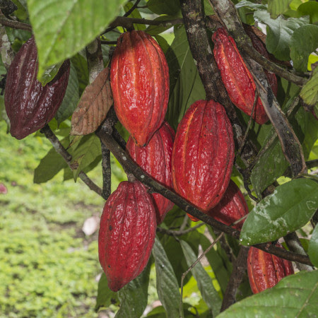

PAPAYO
se distingue por su suave acidez, cuerpo medio y notas frutales ligeras, ofreciendo un perfil de
sabor equilibrado y aromático.
MARAGOGIPE
Se caracteriza por tener un gran tamaño de sus granos, acidez suave, cuerpo ligero y un perfil de
sabor delicado, con notas florales y cítricas.
TIPICA
fácil de manejo y cosecha. Se destaca por su excelente calidad de taza, con un perfil de sabor
dulce y limpio, acidez balanceada .
TABI
Cruce de variedades Típica, Bourbon y líneas resistentes al hongo de la roya. Se caracteriza por
su resistencia a esta enfermedad y por su excelente calidad de taza.
BOURBON AMARILLO
café que se distingue por su dulzura pronunciada, acidez brillante y cuerpo cremoso.
BOURBON ROJO
café conocida por su acidez equilibrada, cuerpo cremoso y dulzura pronunciada, con un perfil de
sabor que presenta notas frutales, especialmente de frutos rojos, y matices de caramelo
BOURBON NARANJA

Café caracterizada por su acidez brillante, cuerpo medio a alto y una dulzura envolvente, con un
perfil de sabor que incluye notas cítricas y de frutas tropicales
Ombligón
Granos redondos y pequeños, con un perfil de sabor balanceado, que presenta una acidez suave y un
cuerpo medio
Caturra

Mutación natural del Bourbon. Ofrece una acidez brillante, cuerpo medio y un perfil de sabor
dulce con notas cítricas y afrutadas,
GUAMO
sombra,crea un microclima que protege las plantas de café del exceso de sol y mantiene la humedad
del suelo, lo que contribuye a un crecimiento saludable y a una mejor calidad del grano.
CARBONCILLO
sombra,crea un microclima que protege las plantas de café del exceso de sol y mantiene la humedad
del suelo, lo que contribuye a un crecimiento saludable y a una mejor calidad del grano.
BUCAYO
sombra,crea un microclima que protege las plantas de café del exceso de sol y mantiene la humedad
del suelo, lo que contribuye a un crecimiento saludable y a una mejor calidad del grano.
NOGAL CAFETERO
sombra,crea un microclima que protege las plantas de café del exceso de sol y mantiene la humedad
del suelo, lo que contribuye a un crecimiento saludable y a una mejor calidad del grano.
BANANO
sombra,crea un microclima que protege las plantas de café del exceso de sol y mantiene la humedad
del suelo, lo que contribuye a un crecimiento saludable y a una mejor calidad del grano.
Cacao Trinitario

Ofrece un equilibrio perfecto entre robustez y aromas delicados, destacándose en el mundo del
chocolate fino.